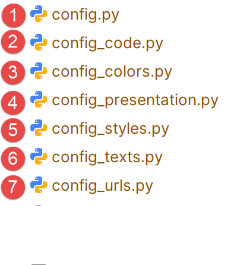

7. Los archivos de configuración de los convertidores
 |
El archivo de configuración [config.py] reúne información que puede cambiar de un documento a otro. En utiliza otros 6 archivos de configuración. Éstos contienen los parámetros que es más probable que cambien al pasar de un documento a otro para su conversión.
El fichero [config.py] importa el contenido de los otros 6 ficheros de configuración:
from config_urls import URLS
from config_texts import TEXTS
from config_code import CODE
from config_styles import STYLES
from config_colors import COLORS
from config_presentation import PRESENTATION
config_urls
Este archivo contiene los tres URL de la configuración [config.py]. Estos cambian con cada documento.
URLS = {
"site_url": "https://stahe.github.io/es-word-odt-vers-html-janv-2026/",
"repo_url": "https://stahe.github.io/es-word-odt-vers-html-janv-2026",
"author_site": "https://tahe.developpez.com",
}
- línea 2: el URL del sitio web donde va a desplegar el sitio HTML producido por el conversor;
- línea 3: el URL de su repositorio Git (véase el párrafo 12) ;
- línea 4: el sitio web del creador del sitio web. Este URL se coloca en la parte inferior de las páginas del sitio web. Puede estar vacío.
config_texts
Este archivo contiene los textos [config.py] que pueden cambiar al cambiar el idioma del sitio HTML.
TEXTS = {
"home_label": "Bienvenido",
"site_name": "Convertir un documento Word u ODT en un sitio web HTML estático compatible con MkDocs utilizando las IA Gemini 3 y ChatGPT 5.2",
"site_description": "Convertir un documento Word u ODT a un sitio HTML estático compatible con MkDocs utilizando las IA Gemini 3 y ChatGPT 5.2",
"toggle_to_dark": "Cambiar a modo oscuro",
"toggle_to_light": "Cambiar a modo claro",
"footer_license_sentence": (
"Este curso-tutorial escrito por <strong>Serge Tahé</strong> se pone a disposición del público según los términos de la\n"
" <em>Licencia Creative Commons Reconocimiento – Sin uso comercial –\n"
" Compartir en las mismas condiciones 3.0 no adaptada</em>.\n"
),
"copy_label": "Copiar",
"copy_copied_label": "Copiado",
}
- línea 2: el nombre del primer enlace del índice. Su contenido incluye todo lo que hay en el documento antes del primer título de nivel 1 (Título 1). Es el principio del documento;
- línea 3: el título del documento. Se muestra en el banner superior del sitio web generado ;
- línea 4: también el título del documento, esta vez para los motores de búsqueda;
- líneas 5-6: las burbujas que aparecen al pasar el ratón por encima del icono de la barra superior de la web para pasar del modo claro al oscuro o viceversa;
- líneas 7-11: la licencia del sitio. Se muestra en la página pied del sitio generado;
- líneas 12-13: el código mostrado del sitio, junto con un botón que permite copiar el código en el portapapeles. La línea 12 es la etiqueta del botón antes de copiar, la línea 13 la etiqueta cuando el código ha sido copiado;
Este es el aspecto del archivo para la versión inglesa del documento:
TEXTS = {
"home_label": "Welcome",
"site_name": "Convert a Word or ODT document into a static HTML website using Gemini 3 and ChatGPT 5.2",
"site_description": "Convert a Word or ODT document into a static HTML website using Gemini 3 and ChatGPT 5.2 AI",
"toggle_to_dark": "Switch to dark mode",
"toggle_to_light": "Switch to light mode",
"footer_license_sentence": (
'This tutorial written by <strong>Serge Tahé</strong> is made available to the public under the terms of the\n'
'<em>Creative Commons Attribution – Non-Commercial –\n'
'ShareAlike 3.0 Unported</em>.'
),
"copy_label": "Copy",
"copy_copied_label": "Copied",
}
config_styles
Este archivo se utiliza para nombrar el estilo del título del documento. Para un documento DOCX, generalmente es "Título", pero para un documento ODT, cambia con cada documento.
STYLES = {
"style_names": [
"P1"
]
}
- línea 2: [styles_names] es una tabla. Puedes poner los nombres de los estilos que puede tener el título del documento;
- línea 3: el documento [word-odt-vers-html-janv-2026.odt] tiene un título con estilo P1 ;
config_code
Los bloques de código del documento DOCX o ODT pueden encontrarse de dos formas:
- código enriquecido (colores, negrita, cursiva, etc.). En este caso, se copia tal cual en el sitio HTML;
- código plano (plain text). En este caso, damos instrucciones a los conversores para que ellos mismos encuentren el lenguaje utilizado en el bloque de código. Para ello, les damos las palabras clave :
CODE = {
# Automatic language detection rules based on content
"detection_rules": {
"csharp": [
"using", "Console.WriteLine", "public static void Main", "WebMethod",
"TryParse", "EventArgs", "String.Format", "System.Web.Services"
],
"java": [
"System.out.println", "public static void main(String", "package",
"JUnitTest", "Class.forName", "PreparedStatement", "private static void",
"private void", "getAgendaMedecinJour", "@PostConstruct", "@ResponseBody",
"@RequestMapping", "getMedecin", "@Entity", "@Autowired", "@Bean",
"Serializable", "getClient", "getCreneau", "getRv", "PostAjouterRv",
"PostSupprimerRv", "@EnableJpaRepositories", "@Component", "getAgendaMedecinJour",
"getResponse", "getMessagesForException", "getBase64", "ajouterRv",
"Reponse", "getPartialViewAgenda", "setModelforAgenda", "ActionContext",
"getActionContext", "PostLang", "PostUser", "PostGetAgenda", "@NotNull",
"@EnableAutoConfiguration", "HttpSecurity"
],
"html": [
"<html>", "</div>", "<body>", "<script>", "href=", "<span>", "<p>",
"<h2>", "<form", "<table", "<input"
],
"sql": [
"SELECT", "INSERT INTO", "UPDATE", "DELETE FROM", "WHERE",
"CREATE TABLE", "AlTER TABLE"
],
"python": [
"def", "import", "print(", "from"
],
"xml": [
"<?xml", "<project", "<version>", "<configuration>", "<build>",
"<dependency>", "<properties>", "<configuration>", "<start-class>"
],
"javascript": [
"use strict", "console.log", "let", "constructor", "async", "export"
],
"php": [
"<?php", "declare", "require"
],
"vbscript": [
"Option", "Dim", "Explicit"
],
"markdown": [
"# ", "## ", "### ", "**", "__", "![", "](" # Typical Markdown markers
],
},
}
Una vez más, estas reglas de detección sólo se aplican a bloques de código en "plain text" y no a bloques de código enriquecido. Si descubre en su sitio que hay bloques de código que no han sido coloreados, ahí es donde tiene que intervenir.
Para cada lengua indicamos cadenas de caracteres utilizadas para identificar cidioma. Determinadas palabras clave pueden encontrarse en distintos idiomas. El conversor selecciona la lengua para la que ha encontrado más palabras clave. El principio es sencillo: usted mira sus códigos, selecciona las palabras clave características y las pone en estas líneas para el idioma correcto. Tenga en cuenta que no puede poner cualquier cosa como nombre de idioma: tiene que utilizar los nombres reconocidos por MkDocs ;
config_presentation
Este archivo establece la apariencia de varios elementos del sitio web generado. No es algo que usted necesita cambiar a menudo :
PRESENTATION = {
# -------------------------------------------------------------------------
# Document title
# -------------------------------------------------------------------------
"document_title": {
"font_size": "28px",
"font_weight": "bold",
"margin_bottom": "1em",
"line_height": "1.2"
},
# -------------------------------------------------------------------------
# Rich code blocks
# -------------------------------------------------------------------------
"code": {
"rich_line_height": "12px",
"rich_font_family": "Consolas, 'Courier New', monospace",
"rich_font_size": "15px"
},
# -------------------------------------------------------------------------
# Copy button
# -------------------------------------------------------------------------
"copy_button": {
"container": "position: relative;",
"btn": (
"position:absolute; top:.5rem; right:.5rem; "
"display:inline-flex; align-items:center; justify-content:center; "
"gap:.35rem; "
"padding:.25rem .6rem; "
"font-size:.72rem; font-weight:600; letter-spacing:.01em; "
"line-height:1.2; "
"border-radius:999px; "
"box-shadow:0 1px 2px rgba(0,0,0,.10); "
"backdrop-filter:saturate(180%) blur(6px); "
"cursor:pointer; user-select:none; "
"transition:transform .08s ease, box-shadow .12s ease, background .12s ease; "
"z-index:5;"
),
"btn_hover": (
"box-shadow:0 3px 10px rgba(0,0,0,.18); "
"transform:translateY(-1px);"
),
"btn_copied": "opacity:.85;"
},
# -------------------------------------------------------------------------
# Images
# -------------------------------------------------------------------------
"images": {
"shadow": {
"enabled": True,
"border_radius": "8px"
}
},
# -------------------------------------------------------------------------
# Frame / header border
# -------------------------------------------------------------------------
"frame": {
"header_top_border_width": "4px"
}
}
Si lo desea, puede cambiar el aspecto :
- líneas 5-10: del título del documento ;
- líneas 15-19: líneas de código mejorado ;
- líneas 24-45: el botón [Copiar] para guardar el código en el portapapeles;
- líneas 50-55: sombras de la imagen ;
- líneas 60-62: el marco que bordea la barra superior de las páginas del sitio;
config_colors
Aquí es donde controlas los colores de tu sitio, principalmente el color de fondo del banner superior de las páginas:
COLORS = {
"theme": {
"palette": {
"light": {
"media": "(prefers-color-scheme: light)",
"scheme": "default",
"primary": "teal",
"accent": "purple"
},
"dark": {
"media": "(prefers-color-scheme: dark)",
"scheme": "slate",
"primary": "teal",
"accent": "purple"
}
}
},
"frame": {
# "header_bg_light": "#1E88E5", (azul)
"header_bg_light": "#0B3D91",
"header_bg_dark": "#0B3D91",
"header_top_border_light": "",
"header_top_border_dark": ""
},
"document_title": {
"color": "#2c3e50"
},
"copy_button": {
"border": "rgba(0,150,136,.45)",
"background": "rgba(0,150,136,.12)",
"text": "rgb(0,150,136)",
"background_hover": "rgba(0,150,136,.20)"
},
"images": {
"shadow": {
"zoomable": "0 8px 24px rgba(0,0,0,.28), 0 18px 60px rgba(0,0,0,.20)",
"zoomable_hover": "0 12px 30px rgba(0,0,0,.32), 0 26px 80px rgba(0,0,0,.22)",
"lightbox": "0 24px 80px rgba(0,0,0,.65)"
}
}
}
Hay que saber un poco de CSS, que no es mi caso. Sólo he utilizado los colores en las líneas 7 y 13, que establecen el color del banner superior.
config_files_to_copy
Este archivo enumera los archivos que deben copiarse en la raíz del sitio web generado :
FILES_TO_COPY =[
"google5179c0eaff293e02.html",
"robots.txt",
"es-word-odt-vers-html-janv-2026.pdf",
"es-word-odt-vers-html-janv-2026.zip"
]
- líneas 2-3: son necesarias para el seguimiento de Google del sitio generado (véase el párrafo 13) ;
- líneas 4-5: los archivos que desea copiar en la raíz de su sitio web para ponerlos a disposición de sus visitantes;
config
El archivo [config.py] es el archivo de configuración utilizado por los dos convertidores. Reúne toda la información ellos necesidad. Se trata de un fichero que no debe modificarse nunca. Es complejo, por lo que hemos decidido extraer los parámetros de configuración susceptibles de cambio y colocarlos en ficheros externos.
from config_urls import URLS
from config_texts import TEXTS
from config_code import CODE
from config_styles import STYLES
from config_colors import COLORS
from config_presentation import PRESENTATION
from config_files_to_copy import FILES_TO_COPY
config = {
"toc": {
"home_label": TEXTS["home_label"]
},
"mkdocs": {
"site_name": TEXTS["site_name"],
"site_url": URLS["site_url"],
"site_description": TEXTS["site_description"],
"site_author": "Serge Tahé",
"repo_url": URLS["repo_url"],
"repo_name": "GitHub",
"use_directory_urls": False,
"theme": {
"name": "material",
"custom_dir": "overrides",
"features": [
"navigation.sections",
"navigation.indexes",
"navigation.expand",
"toc.integrate",
"navigation.top"
],
"palette": [
{
"media": COLORS["theme"]["palette"]["light"]["media"],
"scheme": COLORS["theme"]["palette"]["light"]["scheme"],
"primary": COLORS["theme"]["palette"]["light"]["primary"],
"accent": COLORS["theme"]["palette"]["light"]["accent"],
"toggle": {
"icon": "material/brightness-7",
"name": TEXTS["toggle_to_dark"]
}
},
{
"media": COLORS["theme"]["palette"]["dark"]["media"],
"scheme": COLORS["theme"]["palette"]["dark"]["scheme"],
"primary": COLORS["theme"]["palette"]["dark"]["primary"],
"accent": COLORS["theme"]["palette"]["dark"]["accent"],
"toggle": {
"icon": "material/brightness-4",
"name": TEXTS["toggle_to_light"]
}
}
]
},
"markdown_extensions": [
"admonition",
"attr_list",
"pymdownx.superfences",
"pymdownx.mark",
{
"pymdownx.highlight": {
"anchor_linenums": True,
"linenums": None
}
},
"md_in_html",
"footnotes"
],
"extra_javascript": [
"javascripts/focus.js"
],
"extra_css": [
"stylesheets/focus.css"
]
},
"footer": (
"{% block footer %}\n"
" <div class=\"md-footer-meta md-typeset\">\n"
" <div class=\"md-footer-meta__inner\">\n\n"
" <div>\n"
f" <a href=\"{URLS['author_site']}\" target=\"_blank\">\n"
f" {URLS['author_site']}\n"
" </a>\n"
" <br>\n"
f" {TEXTS['footer_license_sentence']}\n"
" </div>\n\n"
" </div>\n"
" </div>\n"
"{% endblock %}"
),
"extra": {
"analytics": {
"provider": "google",
"property": "G-XXXXXXXX"
}
},
"document_title": {
"style_names": STYLES["style_names"],
"css": (
f"font-size: {PRESENTATION['document_title']['font_size']}; "
f"font-weight: {PRESENTATION['document_title']['font_weight']}; "
f"margin-bottom: {PRESENTATION['document_title']['margin_bottom']}; "
f"line-height: {PRESENTATION['document_title']['line_height']}; "
f"color: {COLORS['document_title']['color']};"
)
},
"code": {
"case_insensitive_languages": ["sql", "html", "vbnet", "vbscript"],
"style_keywords": ["code"],
"default_language": "text",
"rich_line_height": PRESENTATION["code"]["rich_line_height"],
"rich_font_family": PRESENTATION["code"]["rich_font_family"],
"rich_font_size": PRESENTATION["code"]["rich_font_size"],
"detection_rules": CODE["detection_rules"],
"copy_button": True,
"copy_label": TEXTS["copy_label"],
"copy_copied_label": TEXTS["copy_copied_label"],
"copy_only_recognized_language": True,
"copy_min_lines": 4,
"copy_allow_pygments_heuristic": True,
"copy_style": {
"container": PRESENTATION["copy_button"]["container"],
"btn": (
PRESENTATION["copy_button"]["btn"]
+ f"border:1px solid {COLORS['copy_button']['border']}; "
+ f"background:{COLORS['copy_button']['background']}; "
+ f"color:{COLORS['copy_button']['text']}; "
),
"btn_hover": (
f"background:{COLORS['copy_button']['background_hover']}; "
+ PRESENTATION["copy_button"]["btn_hover"]
),
"btn_copied": PRESENTATION["copy_button"]["btn_copied"]
}
},
"images": {
"shadow": {
"enabled": PRESENTATION["images"]["shadow"]["enabled"],
"border_radius": PRESENTATION["images"]["shadow"]["border_radius"],
"zoomable": COLORS["images"]["shadow"]["zoomable"],
"zoomable_hover": COLORS["images"]["shadow"]["zoomable_hover"],
"lightbox": COLORS["images"]["shadow"]["lightbox"],
}
},
"frame": {
"header_bg_light": COLORS["frame"]["header_bg_light"],
"header_bg_dark": COLORS["frame"]["header_bg_dark"],
"header_top_border_light": COLORS["frame"]["header_top_border_light"],
"header_top_border_dark": COLORS["frame"]["header_top_border_dark"],
"header_top_border_width": PRESENTATION["frame"]["header_top_border_width"]
},
"files_to_copy": FILES_TO_COPY,
"debug": True
}
- líneas 1-7: importar todos los archivos de configuración ;
- línea 9 : el fichero de configuración es un script de Python. Define una única variable [config]. Se trata de un diccionario que contiene todos los valores de configuración;
- línea 11: la redacción del enlace "Inicio" ;
- línea 14 el diccionario [mkdocs] configurará el archivo [mkdocs.yml] generado por el Gemini / convertidor ChatGPT. Este archivo es utilizado por script [build] para construir un sitio HTML a partir del sitio MkDocs generado por el conversor ;
- líneas 15-20 configurar el sitio GitHub, que albergará el sitio HTML creado a partir del documento ODT / DOCX (véase el apartado 12)
- llínea 21 esta línea es importante. Si falta, en lugar de mostrar una página HTML, el navegador abrirá la carpeta de esta página;
- línea 24 : MkDocs propone varios temas para un sitio MkDocs / HTML. Ici hemos elegido el tema "material", línea 24 ;
- líneas 27-31 configuración de la navegación del sitio. Para ello se utiliza un índice situado en la columna izquierda de la página mostrada (línea 30) ;
- líneas 33-54 definen dos paletas de colores: modo luz (líneas 35-42) o modo oscuro (líneas 45-52). Un icono en la barra superior de las páginas mostradas permite pasar de una a otra;
- líneas 57-70 extensiones del lenguaje MarkDown utilizadas por MkDocs. Estas extensiones fueron generadas por Gemini en respuesta a algunas de mis peticiones;
- línea 73 el script [focus.js] es un script Javascript generado por Gemini. Está asociado al botón de la barra superior del sitio para mostrar u ocultar el índice;
- línea 76 el CSS utilizado por este botón ;
- líneas 80-95 la definición de la página pied en el sitio HTML. Fue generada por Gemini a partir de un ejemplo de texto que le di;
- líneas 97-100 definición de la etiqueta de Google Analytics (GA) que se utilizará para realizar un seguimiento de las visitas al sitio;
- línea 99 pon tu marcador GA ahí;
- líneas 103-112 el estilo del título del documento, el presente en el documento ODT /DOCX antes del primer título de nivel 1. El estilo mostrado línea 104 cambia con cada ODT Documento. Sin embargo, puede ser constante ('Título') para los documentos DOCX. Por defecto, el conversor registra los estilos de todos los párrafos del documento ODT / DOCX que precede ant el primer título de nivel 1. El primer paso es localizar el estilo del párrafo que desea utilizar como título, a continuación, establezca en el archivo [config_styles];;
- líneas 105-111 el estilo CSS que desea dar al título del documento. Este título se encuentra en la página "Inicio", la primera página que aparece al abrir el sitio;
- línea 115: aquí es donde se ponen los idiomas que no distinguen entre mayúsculas y minúsculas;
- ligne 116 los bloques de código se identifican por sus estilos en el documento ODT / DOCX. Puede haber más de una. Línea 116en la sección "Código", ponemos todas las palabras clave que se pueden utilizar para detectar un estilo de código. En mis documentos, todos mis estilos de código tienen la palabra "código" en su nombre. Y ningún otro estilo tiene esta palabra en su nombre. Así que puedo usar una sola palabra clave. Si hay varias, sepáralas con comas 116 ;
- línea 117 establece el idioma por defecto. En el caso de un bloque de código "plain text", si no se detecta ningún idioma, el idioma por defecto será "text". En el caso de MkDocs, se trata de un bloque de código sin resaltado de sintaxis. Este es el caso, por ejemplo, de ;
- línea 121 plain text": esta configuración se utiliza para los códigos "plain text" que inicialmente no tienen resaltado de sintaxis. El propósito de estas líneas es en dar un en función del lenguaje utilizado en el bloque de código. Ten en cuenta que si todo tu código está enriquecido porque proviene de un IDE como Eclipse, Visual Studio, etc. y no tienes un bloque de código "plain text" asociado a un idioma, entonces no necesitas poner nada en esta parte de la configuración. Puede dejar vacías las tablas asociadas a los idiomas. Todo esto tiene lugar en el archivo de configuración del código [config_code];
- líneas 118-120 bloques de código enriquecidos (negrita, cursiva, subrayado, resaltado, color de los caracteres): estas líneas se refieren a bloques de código enriquecidos (negrita, cursiva, subrayado, resaltado, color de los caracteres). Estos bloques no se tratan de la misma manera que los bloques de código "normal text". Se representan de forma idéntica en HTML ;
- línea 118 establece la altura de línea de las líneas de código ;
- línea 119 establece la fuente CSS del bloque de código ;
- línea 120 establece el tamaño de la fuente ;
- líneas 144-152: establecer la apariencia de las imágenes ;
- líneas 154-160: establece la apariencia del marco en el que se muestra la página web;
- línea 162 la lista de archivos que se copiarán en la raíz del sitio HTML;
- línea 164 debug] en True autoriza los registros de estilo de los párrafos que preceden al primer título de nivel 1 en el Documento ODT / DOCX. En estos registros encontrará el estilo exacto del párrafo que se utilizará como título en la página de inicio del sitio;
Al final, cuando se pasa de un Documento ODT / DOCX al otro, no cambiaremos nada en el archivo [config.py]. Sólo modificaremos los otros archivos de configuración.